Evaluacion de la Apariencia General
Recurso digital interactivo para la enseñanza y valoracion de los 20 parametros de la apariencia general en la practica clinica.
El Ojo Clinico
La justa valoracion y el reconocimiento de los beneficios para la exactitud y prontitud del diagnostico medico que se derivan de la utilizacion de los mas modernos metodos que ofrece la tecnologia, tales como la ecografia, la resonancia magnetica, la tomografia, etc., no deberia menoscabar la importancia de un examen completo y del desarrollo de lo que se ha denominado "el ojo clinico".
Juan Nicolas Corvisart, considerado como el profesor de medicina mas importante de Paris en tiempos de la revolucion francesa, exhortaba a sus alumnos diciendoles: "Observad, aguzad vuestros sentidos de manera que percibais los sintomas y signos de las enfermedades".
El concepto de "ojo clinico" no se refiere a la capacidad para diagnosticar acertadamente una patologia mediante la palpacion, percusion, auscultacion, sino mas a esa habilidad que tenian los antiguos maestros de la medicina, que habian desarrollado un tal sentido de la observacion, que captaban en un instante, a la cabecera del paciente, un sinnumero de datos que podian pasar desapercibidos para otros y a los que concedian gran importancia diagnostica.
Como dice Fidel Schaposnik en su texto de Semiologia: "El llamado ojo clinico consiste precisamente en valorar en su justa medida, esos pequeños sintomas y signos que constituyen el lenguaje criptografico de los organos enfermos, y aplicar la experiencia y los conocimientos previos a la solucion de las situaciones enigmaticas que enfrenta el internista".
"Un buen observador describe los rasgos distintivos del aspecto del paciente con tal precision, que un colega sabria reconocerlo entre una multitud de extraños" — Barbara Bates
Cuando empieza la evaluacion
Desde el primer momento que el medico tiene contacto con un paciente — bien sea cuando entra al consultorio, en una sala de urgencias o cuando se acerca a su cama — observa la forma como camina, su facies, la manera como saluda y como se comporta, sus movimientos, escucha su voz, percibe sus olores; en fin, recibe una cantidad de informacion que ayuda a encaminar un diagnostico aun antes de realizar un examen fisico completo.
La evaluacion de la apariencia general puede indicarnos la prontitud con la cual debemos realizar medidas terapeuticas en un paciente que llega, por ejemplo, a un servicio de urgencias.
Los 20 parametros
1. Genero
Diferencias observables entre hombre y mujer mas alla de los genitales externos.
2. Tipo constitucional
Habito corporal: longilineo, brevilineo o normilineo.
3. Facies
Apariencia general de la cara que revela patologias especificas.
4. Coloracion de la piel
Palidez, rubicundez, cianosis e ictericia.
5. Movimientos involuntarios
Temblores, corea, atetosis, mioclonias y mas.
6. Actitud o postura
Posicion adoptada consciente o inconscientemente por el paciente.
7. Marcha
Patrones de marcha normales y patologicas.
8. Estado de conciencia
Alerta, somnolencia, estupor y coma.
9. Orientacion
Orientacion en tiempo, espacio y persona.
10. Estado de animo
Depresion, ansiedad, exaltacion y enojo.
11. Estado de nutricion
Desnutricion, caquexia y obesidad.
12. Estado de hidratacion
Signos de deshidratacion al examen general.
13. Olores anormales
Halitosis, bromhidrosis y olores caracteristicos.
14. Evidencia de dolor
Signos observables de dolor en el paciente.
15. Evidencia de disnea
Signos clinicos de dificultad respiratoria.
16. Evidencia de tos
Clasificacion y tipos de tos.
17. Actitud frente a la enfermedad
Sentimientos y actitudes ante la enfermedad.
18. Elementos externos
Ferulas, sondas, catéteres y monitores.
19. Edad aparente
Correlacion entre edad aparente y cronologica.
20. Estado de salud
Conclusion subjetiva del estado general del paciente.
Genero
Diferencias observables entre hombre y mujer durante la inspeccion general
Descripcion
Ademas de las diferencias en los genitales externos entre hombre y mujer, existen otras caracteristicas que nos ayudan a determinar, durante la inspeccion general, el genero de la persona. Adicionalmente existen diferencias en cuanto a la tonalidad de la voz y la distribucion y cantidad del vello corporal.
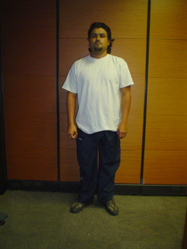
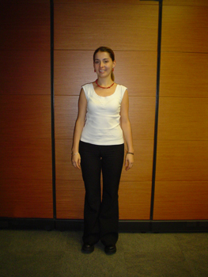
Tabla de diferencias de genero
| Caracteristica | Hombre | Mujer |
|---|---|---|
| Implantacion del cabello | Entradas laterales (regiones frontotemporales) | Limite frontal recto, pocas entradas laterales |
| Piel de la cara | Aspera por la distribucion pilosa | Suave |
| Cejas | Mas pobladas, tendencia a unirse en el centro | Menos pobladas |
| Cartilago tiroides | Mayor | Menor |
| Longitud interacromial | Mayor | Menor |
| Longitud intertrocanterea | Menor | Mayor |
| Pilificacion | Barba, bigote y patillas | No hay barba, bigote ni patillas |
Tipo Constitucional
Conjunto de caracteres morfologicos y funcionales que definen la complexion del individuo
Descripcion
La determinacion del biotipo es util para la adecuada interpretacion de las variantes anatomicas externas y viscerales. En general se utiliza la siguiente clasificacion:
Longilineo (Leptosomico o Astenico)
La altura es mayor que la envergadura; la cabeza es dolicocefalica (diametro anteroposterior mayor que el transverso), el cuello es delgado y largo; el torax es alargado y estrecho, especialmente en el diametro anteroposterior, los espacios intercostales son amplios y el angulo epigastrico es agudo.
El diafragma es bajo lo que determina un pediculo vascular y un corazon verticalizados. Es mayor la distancia entre la fosa supraesternal y el apendice xifoides que la distancia entre este y el ombligo. El estomago esta en posicion vertical hacia la izquierda de la linea media. El higado tambien se encuentra verticalizado.
Brevilineo (Picnico)
La talla es menor a la envergadura; la cabeza es braquicefalica (diametro transverso mayor que el anteroposterior), el cuello es corto y grueso. El torax es ancho, con espacios intercostales estrechos. El diafragma es alto, lo que determina una posicion horizontal del corazon.
La distancia entre la fosa supraesternal y el apendice xifoides es menor que la distancia entre este y el ombligo. El angulo epigastrico es obtuso. El estomago y el higado se encuentran horizontalizados.
Normolineo (Atletico)
La talla es igual a la envergadura. El angulo epigastrico es recto. La distancia entre la fosa supraesternal y el apendice xifoides es igual a la distancia entre este y el ombligo.
Imagenes clinicas
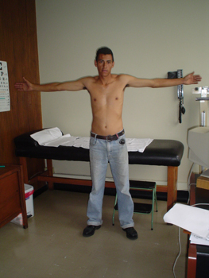
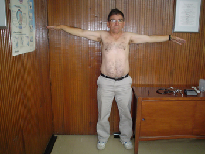
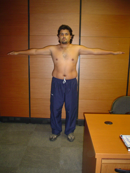
Facies
Apariencia general de la cara que revela patologias especificas
Descripcion
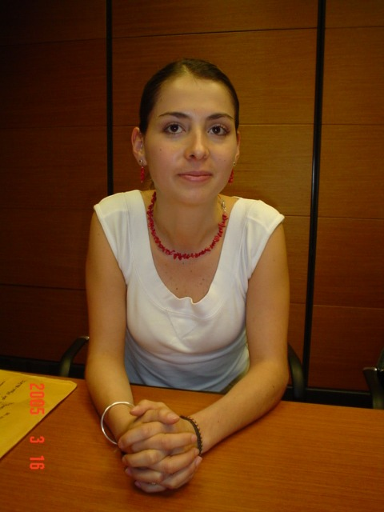
"En la cara se reflejan las reacciones provocadas por el mundo exterior (miedo, repugnancia, etc.), asi como las excitaciones originadas en el propio individuo (alegria, preocupacion, tristeza, etc.) o en trastornos funcionales de las visceras por daño de diferente indole." — Suris
Tipos de facies patologicas

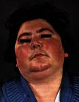
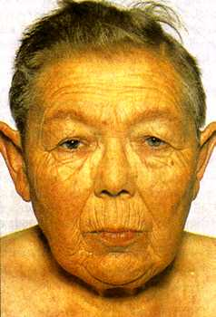
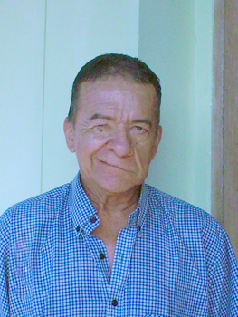
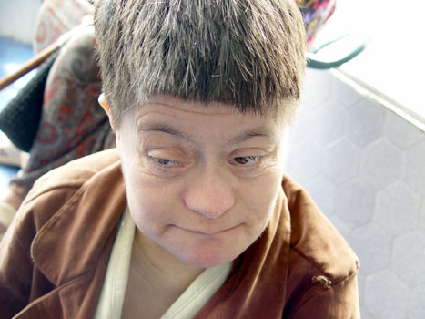
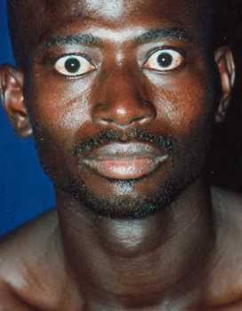

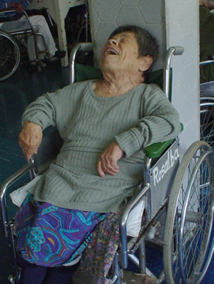

Cambios en la Coloracion de la Piel
Palidez, rubicundez, cianosis e ictericia
Palidez
Atenuacion o disminucion del color rosado de la piel. En personas de raza negra se evidencia en palmas y plantas.
- Localizada o segmentaria
- Causada por isquemia en alguna zona.
- Generalizada
- Producida por disminucion de eritrocitos circulantes en la microcirculacion cutanea y subcutanea. Puede ocurrir por disminucion verdadera del numero de eritrocitos o por vasoconstriccion generalizada (emociones intensas, dolor extremo, sincope, shock).
Rubicundez
Aumento del color rosado de la piel por aumento del volumen sanguineo o por vasodilatacion.
- Generalizada
- Escarlatina, eritrodermia, fiebre, policitemias, exposicion a radiacion solar.
- Localizada
- Fenomenos vasomotores (fugaz) o inflamacion, eritema palmar en hepatopatias cronicas (duradera).
Cianosis
Color azul de la piel causado por aumento de hemoglobina reducida a ≥ 5 gr/100ml (umbral de cianosis).
- Cianosis central
- Disminucion de la saturacion arterial de oxigeno; patologias con alteracion del intercambio gaseoso, cortocircuitos anatomicos, alteraciones de hemoglobina. Se evidencia en piel y mucosas.
- Cianosis periferica
- Perdida excesiva de oxigeno en red capilar por estasis venosa o disminucion del calibre de la microcirculacion. Insuficiencia cardiaca, shock, exposicion al frio. Solo en partes distales, nariz, orejas y region peribucal. No compromete mucosas.
- Cianosis mixta
- Factores de cianosis central y periferica combinados, como en Cor pulmonar.
Ictericia
Coloracion amarilla de piel, mucosas visibles y esclerotica debida a acumulacion de bilirrubina en sangre. Se debe diferenciar de carotinemia (alto consumo de zanahoria o tomate), donde la piel pero no las mucosas presentan color amarillo.
Puede ser producida por: hemolisis, enfermedades hepaticas u obstruccion de vias biliares extrahepaticas.
Imagenes clinicas por subcategoria
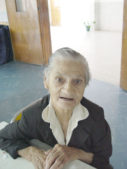
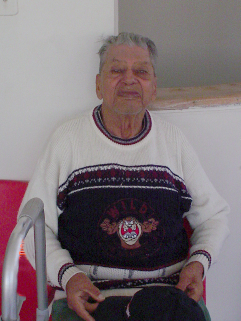
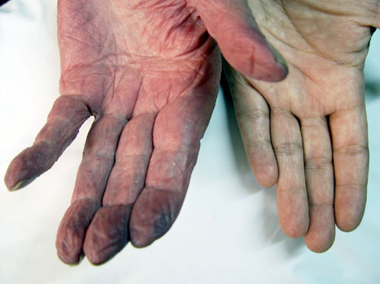
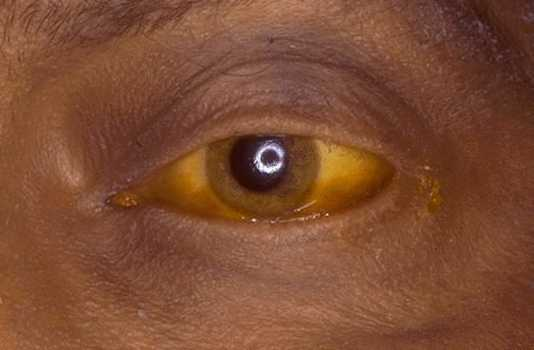
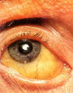
Movimientos Involuntarios
Movimientos realizados sin la intervencion de la voluntad
Descripcion
Pueden ser producidos por trastornos funcionales o lesiones del sistema nervioso. Para definirlos se debe tener en cuenta: segmento corporal comprometido, extension y distribucion, ritmo, duracion, velocidad y amplitud.
Tipos de movimientos involuntarios
Las secuencias animadas provienen del video demostrativo original.
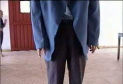
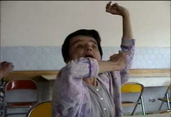
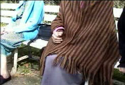
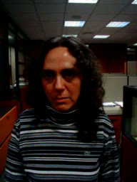
Actitud o Postura
Posicion adoptada consciente o inconscientemente para aliviar una molestia o dolor
Imagenes de referencia
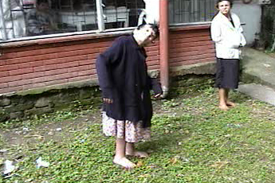
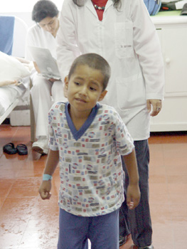
Tipos de decubito
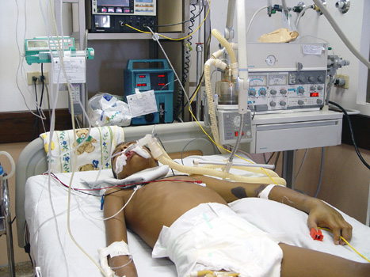

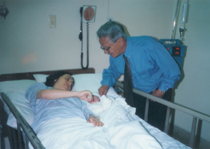

Tipos de decubito activo
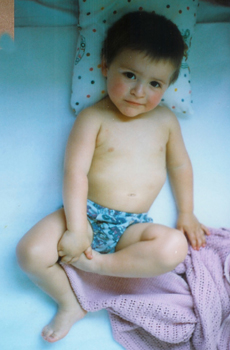
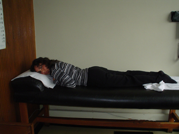
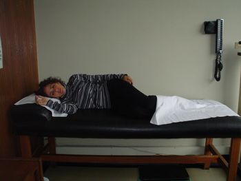

Marcha
Evaluacion del modo de caminar y sostenerse en pie
Que observar
"El modo como los enfermos se sostienen en pie y su forma de caminar ponen de manifiesto no solo el estado general del individuo sino tambien la coordinacion de factores oseos, articulares, musculares y neurologicos" — Suris, 1978.
Se deben evaluar: velocidad, direccion, simetria de las fases, base de sustentacion, direccion de los pies, altura y longitud de los pasos, postura, balanceo de los brazos, movimientos de la pelvis.
Marchas patologicas
Las secuencias animadas provienen del video demostrativo original.
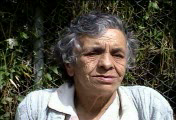
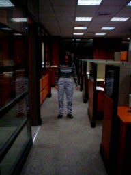
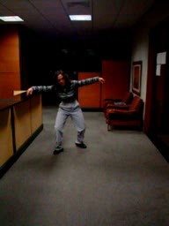
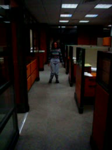
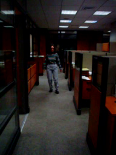
Estado de Conciencia
Percepcion de si mismo y del ambiente y capacidad de reaccion a estimulos
Definicion
"Estado de percepcion momentanea del paciente de si mismo y del ambiente y su capacidad de reaccion a la estimulacion externa y las necesidades internas" — Adams, 2000.
Niveles de conciencia
- Alerta
- Completa reaccion ante estimulos. Percepcion normal de si mismo y del ambiente.
- Somnolencia
- Disminucion del estado de alerta. Sueño ligero. Responde a estimulos por periodos cortos.
- Estupor
- Parece dormido, despierta solamente ante estimulos vigorosos.
- Coma superficial
- Parece dormido, incapaz de despertarse. Responde a estimulos de dolor profundo. Conserva tono muscular y reflejos pupilares, de deglucion y osteotendinosos.
- Coma profundo
- No responde a estimulos. Perdida de reflejos pupilares, de deglucion y osteotendinosos. Tono muscular disminuido en forma generalizada.
Imagenes clinicas por nivel de conciencia
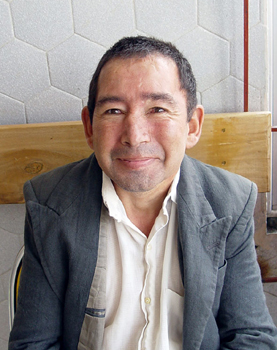


Orientacion
Capacidad para reconocerse y ubicarse en tiempo, espacio y persona
Tipos de orientacion
- Orientacion en tiempo
- Conocimiento del año, mes, dia de la semana, hora aproximada del dia (mañana, tarde, noche).
- Orientacion en espacio
- Ubicacion del lugar donde se encuentra, de la ciudad, del pais.
- Orientacion en persona
- Conocimiento de su nombre, de su profesion y de su historia personal.
Imagenes clinicas
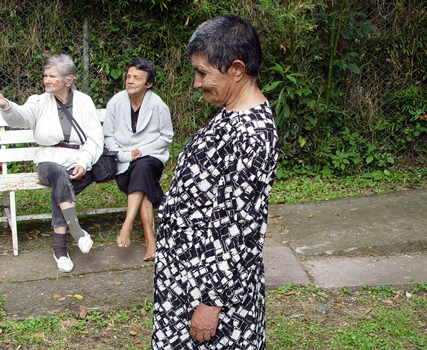
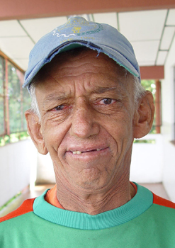
Estado de Animo
Componente subjetivo y objetivo del estado emocional del paciente
Descripcion
Tiene un componente subjetivo (como se siente la persona) y un componente objetivo (como lo ve el examinador). Se describe el estado emocional que predomino durante la evaluacion, determinado por la expresion facial, inflexiones de la voz, actitud, posicion de labios, direccion de la mirada, expresion de los ojos y el vestido.
Estados de animo
- Depresion
- Quietud, retardo en el habla o mutismo, mirada al piso, llanto facil, suspiros, descuido en el vestir.
- Ansiedad
- Inquietud, exaltacion sin motivo real, mirada inquieta, manos apretadas, lenguaje atropellado, risa "nerviosa", sudoracion de axilas y manos.
- Exaltacion
- Hipomania o mania con hiperactividad, habla apresurada.
- Enojo
- Mirada fija y dura, perdida del sentido del humor, exigencia permanente de explicaciones, indagacion sobre titulos y experiencia del medico.
Imagenes clinicas
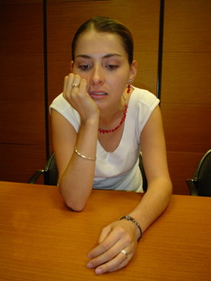
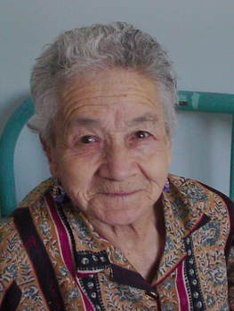
Estado Aparente de Nutricion
Observacion de grasa corporal, masa muscular y presencia de edema
Desnutricion
Disminucion de la masa muscular. Atrofia de musculos temporales. Piel seca y agrietada. Caida del cabello y vello corporal. Edema.
Caquexia
Grado mas avanzado de desnutricion. Piel palida, seca y fina. Globos oculares hundidos por desaparicion de la grasa retroorbitaria. Pomulos prominentes y desaparicion de la bola adiposa de Bichat. Prominencia de todos los huesos del cuerpo bajo la piel. Abdomen excavado. Perdida de la redondez de gluteos y amplio espacio entre los aductores del muslo.
Obesidad
Aumento de la proporcion de grasa corporal en relacion con los demas componentes.
- Tipo androide
- Grasa en parte superior: cara, dorso del cuello, hombros, mitad superior del tronco, region epigastrica.
- Tipo ginecoide
- Grasa en mitad inferior: region hipogastrica, caderas, muslos. Al aumentar, compromete barbilla, cuello posterior, epigastrio y gluteos.
- Obesidad exogena
- Grasa distribuida igualmente en tronco y extremidades.
- Obesidad endogena
- Distribucion centripeta: acumulacion en el tronco, extremidades normales. Ejemplo: enfermedad de Cushing.
Imagenes clinicas por subcategoria
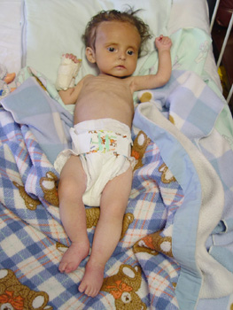
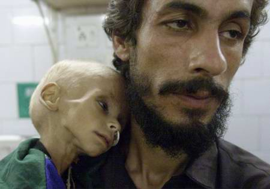
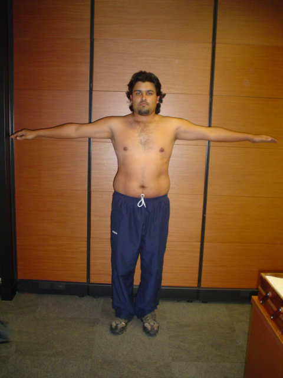
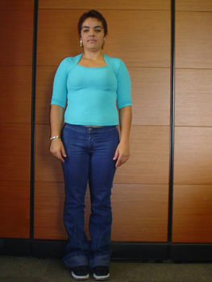
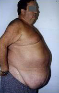
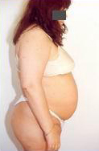
Estado Aparente de Hidratacion
Balance total de liquidos y electrolitos del organismo
Signos de deshidratacion
- Piel seca, poco elastica
- Mucosas secas
- Ojos hundidos
- En niños: fontanelas deprimidas
- Excitacion fisica o abatimiento
- Estado general comprometido
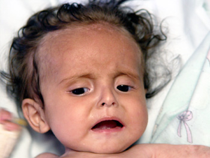
Olores Anormales
Halitosis, bromhidrosis y olores caracteristicos de intoxicaciones
Halitosis
Mal aliento. Se presenta en procesos de la cavidad oral (caries extensa, mala higiene dental, amigdalitis) o trastornos digestivos infecciosos o tumorales. Tambien aliento alcoholico, a cigarrillo u olor a sustancias causa de intoxicacion.
Bromhidrosis
Transpiracion fetida. Puede ser producida por ingestion de ciertos alimentos, accion de bacterias sobre productos de secrecion sudoripara en personas con mala higiene, o procesos metabolicos con olores caracteristicos:
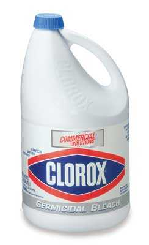
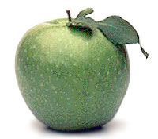
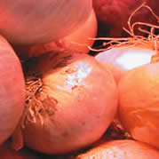

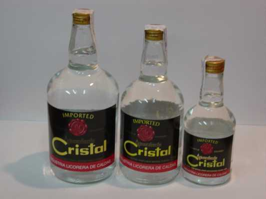
Evidencia de Dolor
Signos observables que evidencian dolor en el paciente
Signos de dolor
A pesar de que el dolor es un sintoma eminentemente subjetivo, en la valoracion del paciente se pueden evidenciar los siguientes signos:
- Gemidos
- Movimientos defensivos
- Midriasis
- Palidez
- Entrecejo fruncido
- Marcha antalgica
- El paciente toma con las manos el sitio afectado
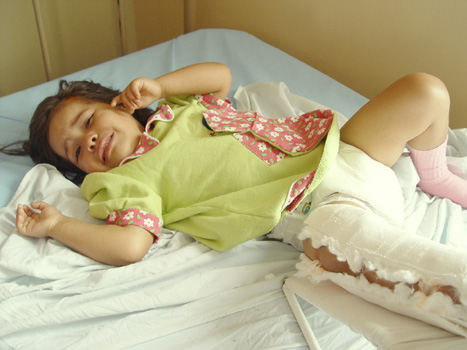
Evidencia de Disnea
Sensacion desagradable de necesidad de aumentar el trabajo respiratorio
Descripcion
Disnea es la sensacion desagradable de la necesidad de aumentar el trabajo respiratorio, que reemplaza el acto automatico de respirar. Se evidencia por medio de diversos signos clinicos:
- Retracciones al momento de la inspiracion en fosa supraesternal, fosas supraclaviculares, epigastrio, espacios intercostales
- Alteracion en la relacion inspiracion-espiracion (normal 2:3)
- Asimetria en la amplitud del torax con los movimientos inspiratorios
- Alteraciones en la frecuencia respiratoria
- Cornaje: Ruido inspiratorio sibilante o roncante de tono alto. Patologias de vias aereas superiores
- Estridor laringeo
- Sibilancias espiratorias audibles: patologias que provoquen obstruccion de las vias bronquiales
Fotogramas del video clinico
Fotogramas extraidos del video demostrativo original de signos de disnea.
Evidencia de Tos
Acto reflejo y en ocasiones voluntario de espiracion brusca
Descripcion
La tos es un acto reflejo y en ocasiones voluntario. Consiste en una espiracion brusca, realizada en un comienzo con la glotis cerrada, luego al aumentar la presion esta se abre saliendo el aire con mucha presion, lo que determina el ruido caracteristico.
Tipos de tos
- Tos seca
- Tos clara que no moviliza secreciones.
- Tos humeda
- De timbre grave, burbujosa, que moviliza secreciones. Puede ser productiva o no productiva.
- Tos perruna (seca, espasmódica, ronca, tono bajo)
- Afecciones laringeas.
- Tos humeda apagada y debil
- Pacientes comprometidos, paresia de musculos respiratorios.
- Tos seca incompleta y dolorosa
- Pleuritis.
- Tos afonica
- Lesion de cuerdas vocales.
- Tos bitonal
- Sonido de tono alto y otro de tono bajo. Paralisis de una cuerda vocal por inflamacion o lesion del nervio laringeo recurrente.
- Tos quintosa
- Paroxismos con espiraciones violentas, luego inspiracion profunda y sibilante (reprise). Tos tipica de la tos ferina.
- Tos coqueluchoide
- Similar a la quintosa, menos severa, sin reprise ni expectoracion hialina. Sindrome mediastinico.
Secuencia clinica
Fotogramas extraidos del video demostrativo original.
Actitud Frente a la Enfermedad
Sentimientos y actitudes del paciente ante su enfermedad
Descripcion
Ante la presencia de una enfermedad se pueden poner en evidencia sentimientos de rabia, tristeza entre otros, que determinan actitudes de rechazo, aceptacion, lucha o indiferencia frente a la misma.
Estos sentimientos tienen relacion con:
- El significado que tiene la enfermedad para el paciente
- El impacto emocional que causa en el y su entorno
- La vision de futuro ante una patologia
Presencia de Elementos Externos
Dispositivos medicos y elementos terapeuticos visibles en el paciente
Elementos externos comunes
- Ferulas: Evitan movilizacion de un segmento corporal en lesiones traumaticas
- Tubo a torax: Drenaje pleural para evacuacion de liquido o gas
- Tubo naso-traqueal u oro-traqueal: Mantiene via aerea permeable y facilita aspiracion de secreciones
- Canula de traqueotomia
- Oxigeno (canula nasal, mascarilla)
- Liquidos endovenosos
- Monitores
- Sonda nasogastrica
- Vendajes
- Cuello ortopedico
- Cateteres
Imagenes clinicas por subcategoria


Edad Aparente
Correlacion entre la edad aparente y la edad cronologica
Descripcion
"Como, por lo demas, la armonia del exterior permite, al menos hasta cierto punto, deducir el buen funcionamiento de los organos internos, lo mismo puede afirmarse en lo que atañe a la evolucion senil del hombre." — Risak, 1942
- En los niños, una edad aparente menor puede estar relacionada con malnutricion o con trastornos hormonales.
- En los adolescentes debe haber correlacion entre el desarrollo puberal con la edad cronologica.
- En los adultos una edad aparente mayor puede dar indicios del impacto fisico que ha causado una patologia organica o funcional.
Imagenes clinicas por grupo etario
Estado Aparente de Salud
Conclusion subjetiva que resulta de unir todos los datos de la apariencia general
Descripcion
La determinacion de un buen, regular o mal estado de salud es una conclusion subjetiva que resulta de unir todos los datos obtenidos de la apariencia general. Depende en parte de la experiencia del medico que realiza la evaluacion.
Tiene utilidad para entender hasta que punto la enfermedad afecta el organismo en su conjunto. Alerta al medico, cuando hay pocos sintomas o signos de una enfermedad especifica, a investigar la causa del deterioro del estado general del paciente.
De otra parte, puede ocurrir que un paciente con enfermedad grave conserve un buen estado general, lo que puede indicar una buena capacidad de respuesta del organismo. Por esta razon, no siempre existe una relacion directa entre el aparente estado de salud y la gravedad de la enfermedad.
Imagenes clinicas por categoria
Autoevaluacion
Pon a prueba tus conocimientos sobre la apariencia general
Galeria de casos clinicos
Observa las siguientes imagenes e identifica los hallazgos de la apariencia general en cada paciente. Luego, pon a prueba tus respuestas con el cuestionario.


Cuestionario
Bibliografia
Fuentes consultadas para la elaboracion de este recurso
- Bickley, L. S. (2021). Bates' Guide to Physical Examination and History Taking (13th ed.). Wolters Kluwer.
- DeGowin, R. L., & DeGowin, E. L. (2019). DeGowin's Diagnostic Examination (11th ed.). McGraw-Hill.
- Sapira, J. D. (2020). Sapira's Art and Science of Bedside Diagnosis (5th ed.). Wolters Kluwer.
- Suris Batlló, A. (1978). Semiologia Medica y Tecnica Exploratoria. Elsevier.
- Schaposnik, F. (1988). Semiologia. El Ateneo.
- Argente, H. A., & Alvarez, M. E. (2013). Semiologia Medica: Fisiopatologia, Semiotecnia y Propedeutica (2da ed.). Editorial Medica Panamericana.
- Risak, E. (1942). Clinica Propedeutica Medica. Labor.
- Adams, R. D. (2000). Principios de Neurologia. McGraw-Hill Interamericana.
- Kanjee, Z., & Tess, A. (2022). Visual diagnosis in medicine: Bridging the gap with digital tools. Academic Medicine, 97(5), 674-679.
- McGee, S. et al. (2024). Evidence-based physical diagnosis. JAMA Internal Medicine.
- Lees, A. J. et al. (2024). Digital approaches to teaching clinical examination. Medical Education.
- Al Kahf, R. et al. (2023). Interactive multimedia for clinical skills training: A systematic review. BMC Medical Education.